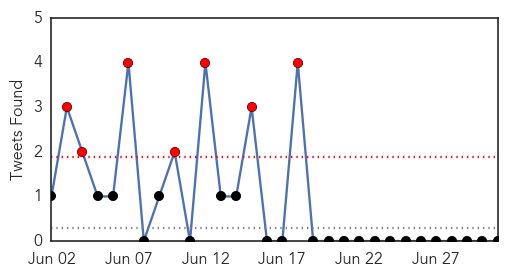

30 Day Trends
Web: 12 alerts, 11 warnings
Twitter: 7 alerts, 0 warnings
Top Articles:
- 0.996
- MERS Scan for Jul 01, 2015
- 0.992
- First-ever possible treatments for MERS Virus identified with discovery of two antibodies
- 0.986
- South Korea MERS update from WHO
- 0.979
- Top Stories
- 0.979
- University of Maryland, Baltimore
- 0.945
- MERS Help on the Horizon?
- 0.923
- Korean student under quarantine
- 0.915
- Korean under observation for MERS at Bacolod hospital
- 0.911
- Korean student with MERS symptoms quarantined
- 0.896
- Korean in Bacolod monitored for Mers-CoV
- 0.853
- Korean student, suspected of MERS-CoV, hospitalized
Top Tweets:
-
No tweets found for Jul 01, 2015
Web/News Articles
Tweets
Article Locations
Article Confidences